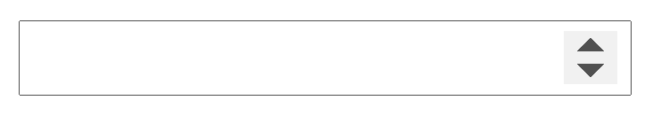

Este input lo que nos permite es seleccionar un color en distintos formatos. Si presionamos en la flechita marcada en rojo, cambia entre formatos para poder elegir el que deseemos.
Una posible utilidad de este input, es cuando queremos que el usuario pueda elegir el color de texto o de fondo o el color primario de nuestra web o aplicación.
Input de tipo número
<input type="number" />

Este input como su nombre indica es para ingresar números (no permite escribir texto). Tiene las flechitas para subir y bajar que al pulsarlas aumentan o disminuyen el número ingresado en uno. También puede escribirse un número que nosotros queramos.
Input de tipo rango
<input type="range" />
(Vista de Microsoft Edge)
Este input aunque no se usa mucho, permite al usuario elegir entre un rango de valores predefinidos.
Admite 3 atributos que permiten gestionar como se desplazará la barra y el mínimo y el máximo de valores posibles asignados.
min=""
Permite asignar un mínimo al rango del input.
max=""
Permite asignar un máximo al rango del input.
step=""
Este atributo permite designar de a cuanto se va a mover la barra. Por ejemplo si establecemos min="0" y max="10" y step="5", solo podrá moverse tres posiciones.
Imagen del ejemplo descrito
Input de tipo reset
<input type="reset" />
Al igual que el botón de tipo reset, este input deja el formulario con el estado por defecto en todos los inputs que tenga. No recarga la página como lo hace el botón de tipo submit.
Input de tipo texto
<input type="text" />
Este es el valor por defecto de cualquier input que no tenga un type="" declarado. Los inputs en el atributo type="" pueden recibir el valor hidden, lo cual esconde el input al usuario. Esto es útil cuando queremos que en función de lo que elija el usuario mostrar por javascript o no un input, y si queremos que el input que debemos mostrar es de tipo input, pues cambiamos el valor hidden por text.